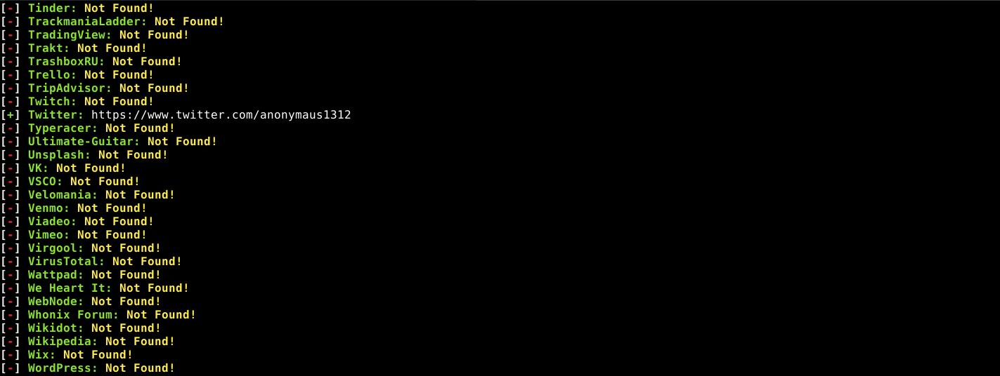

OpSec
Das Wort “Opsec” steht für “Operations security” und bezeichnet eine Reihe von Vorgehensweisen um den Gegnern kritische Informationen vorzuenthalten. Ein Teil davon sind technische Maßnahmen wie sie hier beschrieben wurden, ein zweiter sehr wichtiger Teil sind Verhaltensregeln. Mache dir bewusst welche Informationen du geheim halten möchtest und wer sich für diese interessieren könnte. Rede nicht mit der Polizei, auch nicht wenn du glaubst clever zu sein und sie mit Lügen täuschen zu können. Auch Lügen können wichtige Informationen enthalten.
Vermeide es im Kontext von Aktionen Fotos zu machen. Wenn es nicht anders geht denke daran das Foto akribisch nach Details zu durchsuchen. Verpixele Gesichter, Markenlogos auf Kleidung, Schuhe, Gebäude im Hintergrund, Stromleitungen, persönliche Gegenstände und so weiter. Prüfe auch ob dein Handy Standortdaten im Bild speichert und bereinige diese gegebenenfalls. Bei vielen Geräten ist das Speichern von Standortdaten die Standardeinstellung, vergiss diesen Schritt also auf keinen Fall. Du kannst dafür zum Beispiel die App „Scrambled Exif“ benutzen.
Poste nicht in sozialen Netzwerken über deine Erlebnisse. Prahle niemals damit welchen Gruppen du angehörst, wen du kennst oder bei welchen Aktionen du dabei warst. Gehe nach einer Aktion nicht auf direktem Weg nach Hause sondern mach ruhig mal einen Umweg. Verwende während Aktionen Decknamen und Codes. Wenn nötig trage bei Aktionen Handschuhe. Bedenke auch das menschliche Körper echte Dreckschleudern sind und bei jeder Gelegenheit DNA hinterlassen. Bedenke das in der Öffentlichkeit überall Kameras sind, zum Beispiel an Bahnhöfen, im Umfeld von Geschäften und Kiosks und an Polizeiwachen. Software zur Gesichtserkennung ist keine Zukunftsmusik mehr und wird bereits überall auf der Welt eingesetzt, also bedecke wenn möglich dein Gesicht. Wenn du nicht alle Tipps zur Nutzung von Demohandys akribisch befolgt hast dann lasse dein Handy am besten zuhause.
Wenn du im Internet Anonymisierungstechnologie nutzt denke daran deine Identitäten voneinander zu trennen und nicht im anonymen Kontext Dinge zu schreiben oder Logins zu nutzen die dich deanonymisieren. Wenn du diese nutzen willst dann wechsele den Kontext, zum Beispiel indem du im Tor Browser auf „New Identity“ klickst oder das VPN wechselst.
Vergiss nicht das heutzutage fast jedes Telefon ein kleiner Computer mit Mikrofon ist. Bei privaten Gesprächen schalte das Gerät aus. Am besten nimmst du den Akku raus oder lagerst es irgendwo außer Hörweite.
Das sind alles keine komplizierten Tipps, aber sie alle zu beachten ist nicht immer leicht, Reden macht nunmal Spaß. Bitte denke daran das diese Verhaltensregeln dich vor dem Knast bewahren können.

Software “sherlock” zum Aufspüren von Accounts in sozialen Netzwerken
Links:
| « IMSI Catcher und Stille SMS | ⇑ Themen | Dienste und Anbieter » |